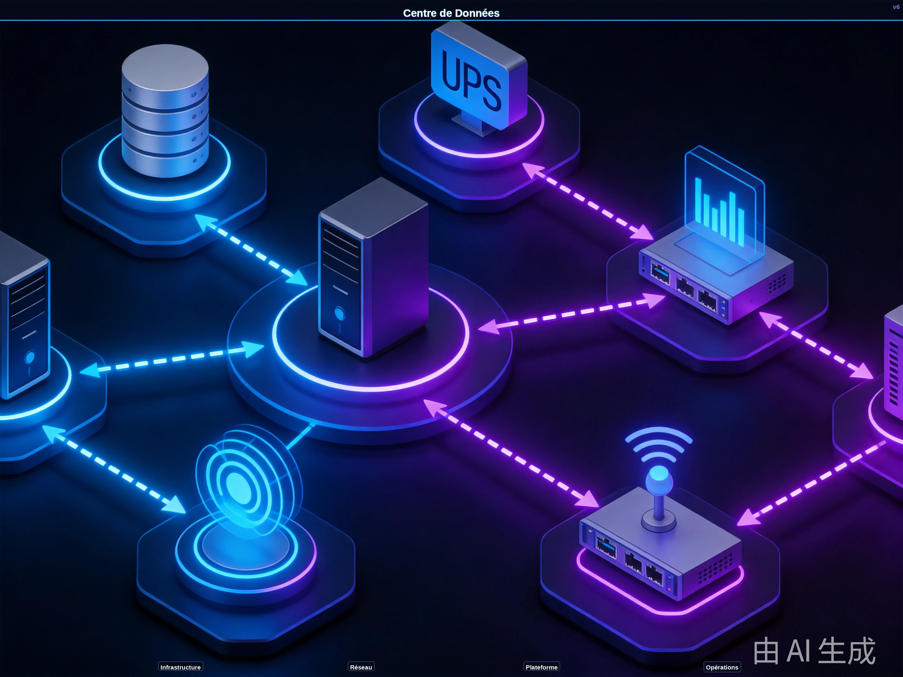

AXLTeco fournit des services complets d'infrastructure de centre de données et de conception d'architecture réseau, garantissant des opérations informatiques sécurisées, stables et efficaces.
Architecture de la Solution

La solution Centre de Données & Réseau adopte une architecture en couches Infrastructure-Réseau-Sécurité-O&M. La couche infrastructure intègre la surveillance environnementale, l'onduleur, le refroidissement de précision et les capteurs de la salle électrique, avec des passerelles edge complétant l'acquisition de données et le prétraitement d'alarmes via MQTT / Modbus TCP. La couche plateforme construit une plateforme O&M unifiée sur .NET 8.0 + ASP.NET Core + Furion, avec DotNetCore.CAP garantissant la cohérence transactionnelle pour l'escalade d'alarmes et les bons de travail de changement, RabbitMQ orchestrant les flux d'événements d'alarmes, Redis Cluster mettant en cache les états d'équipements et les métriques de performance, MySQL stockant les configurations d'actifs et les registres de changements, MongoDB stockant les journaux et les données de surveillance séries temporelles, et SqlSugar fournissant le mappage ORM multi-sources. La couche réseau utilise un contrôleur SDN pour l'orchestration automatisée, avec Keepalived + Nginx actif-secours assurant la haute disponibilité du plan de gestion. La couche application construit un tableau de bord O&M visuel avec Vue 3 + Element Plus, intégrant la planification de capacité, la prédiction de pannes, l'inspection automatisée et le reporting; les clients O&M de bureau sont construits sur WPF ou .NET MAUI, supportant la gestion unifiée des serveurs physiques, de la virtualisation et du cloud hybride. DevOps utilise Git + Jenkins + NuGet/NPM pour la livraison continue, avec Docker + Kubernetes pour le déploiement standardisé.
Composition de la Solution
Scénarios d'Application

Applicable aux centres de données d'entreprise, salles serveurs, réseaux de bureaux, réseaux de campus et interconnexion de succursales.
Avantages de la Solution
Conception modulaire avec scalabilité élastique ; architecture redondante pour haute disponibilité ; plateforme unifiée réduisant la complexité ; conforme aux normes TIA-942 et ISO27001.
Valeur de la Solution
Construire une infrastructure IT hautement disponible, sécurisée et évolutive comme base solide pour la transformation numérique. Réduire les coûts IT et améliorer la continuité des activités.
Pratique Projet
Nous avons livré des solutions pour de multiples entreprises locales africaines et institutions financées chinoises, couvrant la construction de centres de données et les déploiements réseau.